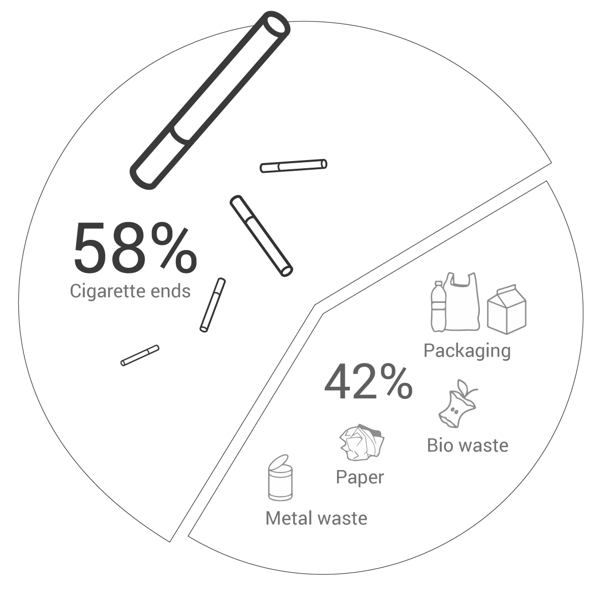
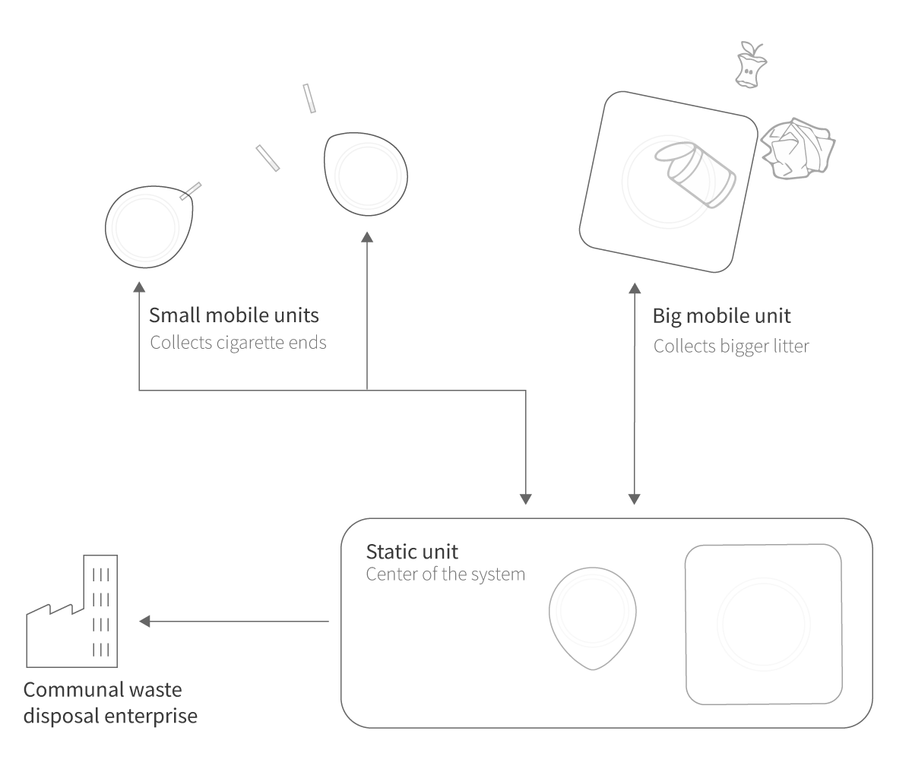
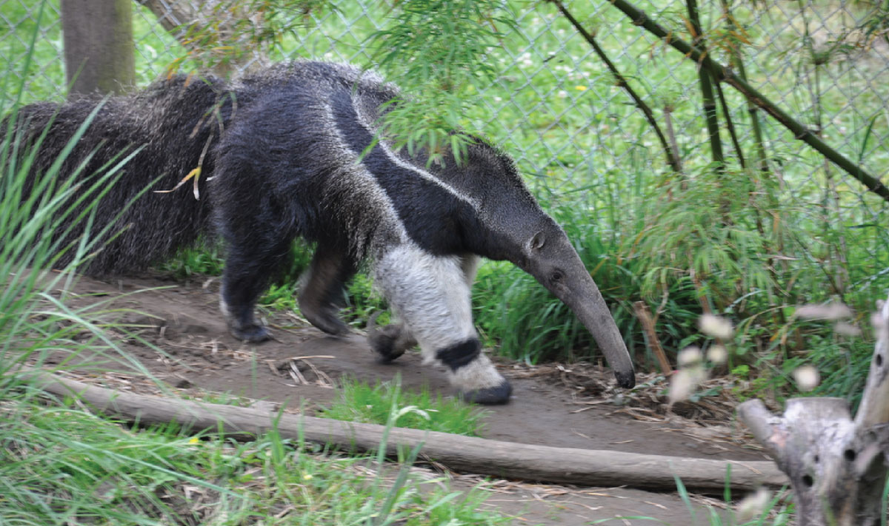
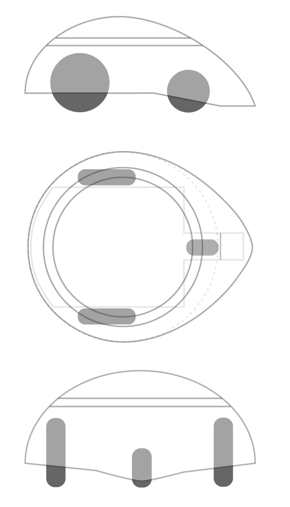

How to take care of trash in parks and public spaces in a more modern way? Concerning the semester
topic IoT we created a fleet of interconnected cleaning robots, that integrate seamlessly into the
public ecosystem.
My Role
User research
Interaction design
Prototyping with Unity3D
Team
Sebastian Schuchmann
Lisa Hofstädter
Dogukan-Deniz Yoltay
Year
Summer 2017
Cigarette litter is very common
According to a european wide study concerning littering cigarette ends are the objects that are thrown
away the most at public spaces. To be exact, cigarette ends fill 58% of the total amount of litter.
Therefore we decided to focus on this specific problem in our concept.

How the system works
The system contains a static unit and mobile units.
The static unit is the storer, navigater and communicator of the system.
Among storing collected trash it acts as a middleman between the mobile units and third
parties such as the communal waste disposal company. Furthermore it is responsible for
navigating and managing mobile units in the park. The main advantage of such a unit is
to centralize the disposal transportation for third parties as well as not disturbing the
daily usage of the park.
Mobile units are the executive instance of the system. They follow paths according to
updated
heat maps and designated paths in the park to finally store them at the static unit. There are
two types of mobile units. One is specifically for disposing cigarette litter. The other larger
one is for collecting larger litter.

Adapting natural principles
Just like squirrels or hedgehogs, the robot fleet has to keep a balance between
preserving a considerate distance to other park users yet they have to remove waste effectively.
Therefore the robot fleet would be adopting exactly those kinds of animal traits.


Forming Process
We derived the shape of the mobile unit from the previously defined character traits.
To stay quiet and imperceptible, a mobile unit would look flat with soft friendly edges.
To collect small cigarettes ideally it has similar to hedgehogs or ant bears a pointy mouth to reach
small corners.
Behavioural Study
It was very percipient to test the designed behaviour and shape of the unit in the park. We rapidly build the
shape and attached it to a remote-controlled toy-car. After this study, we learned that
a visual interface between human park users and mobile robots is necessary to display some sort of feedback and reaction.
Prototyping with Unity
To check how the whole system interacts, we created a click prototype via Unity. Via clicks on the
screen, one can place litter in the park.
Reflection
This project taught me how multiple rapid prototypes can become a shortcut of improving
a concept before realization.
We created prototypes to check the following aspects:
Testing the designed behaviour,
examine the way how the whole system works together (Unity3D prototype)
and testing the shape via sketches, 3D renderings and constructing a 3D model.
This was a faster and very insightful way to not only test our concept but also explaining the concept
in many perspectives.